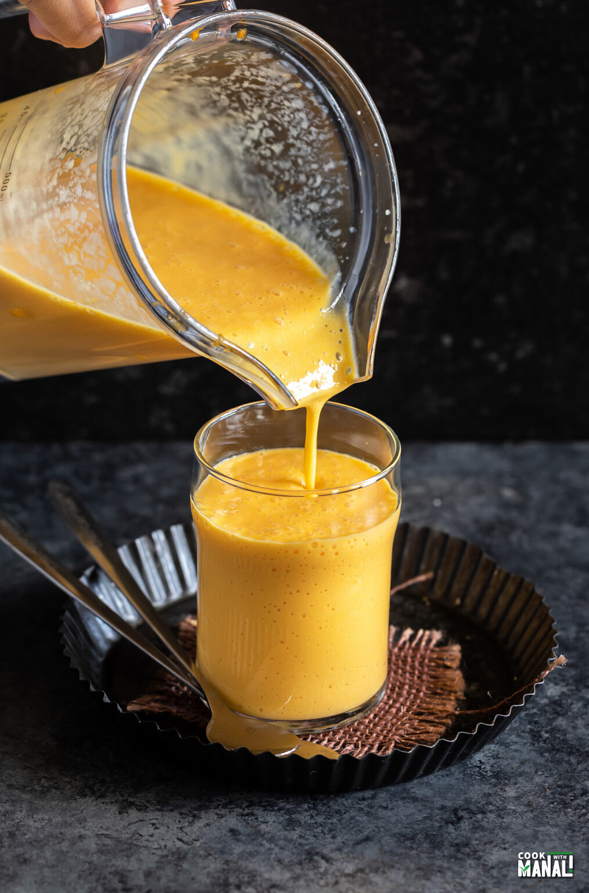

Mango Shake

Sweet and creamy Mango Milkshake is a great way to enjoy the sweet mangoes in season. Made with just few ingredients, you can enjoy this milkshake for breakfast or evening snack. Make it plain or jazz it up by adding some vanilla ice cream to it.
Ingredients:
- Sugar
- Milk
- Mangos
Recipe:
- Peel and chop mangoes directly into the mixer. Keep about 10 pieces aside to add to the shake.
- Add the rest of the ingredients and blitz until smooth.
- Pour into tall glasses and add 5-6 pieces of mango in each. Enjoy!